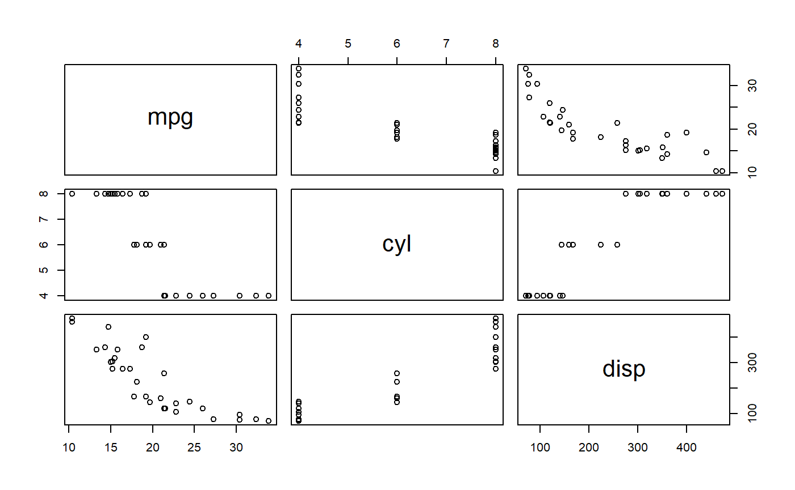

Examples how to use knitrContainer
(knitrContainer v0.0.28)
Vilmantas Gegzna
2018-07-26
Source:vignettes/v1_examples.Rmd
v1_examples.RmdIntroduction
About knitrContainer
knitrContainer is an R package designed to collect objects and print them in knitr reports.
How to use knitrContainer?
Only 4 things should be done for basic use of knitrContainer package :
- Create a container(e.g. function
knitrContainer()); - Add objects to the container (use
add_as_*family functions, e.g. functionadd_as_is()); - In a R code chunk of
knitrreport file set optionresultstoresults='asis'; - Print the objects appropriately: apply function
print_all()in the chunk which has optionresults='asis'.
Example 2
Example how to add objects using the operator %<>% from package magrittr:
It is the same as:
Type the following code in R to learn more about operator %<>%:
More detailed examples are presented in the following sections.
Functions for class knitrContainer
Attach objects to the end of the container
# Section headings
container <- add_as_heading1(container, "Plots")
# Add `plotly` objects as `htmlwidgets`
container <- add_as_heading2(container, "Add `plotly` as `plotly htmlwidget`")
container <- add_as_plotly_widget(container, plotly_obj)
# Add `ggplot` objects as plotly `htmlwidgets`
container <- add_as_heading2(container, "Add `ggplot` as `plotly htmlwidget`")
container <- add_as_plotly_widget(container, ggplotly(ggplot_obj))
# Add `ggplot` objects as `ggplot` objects
container <- add_as_heading2(container, "Add `ggplot` as-is")
container <- add_as_is(container, ggplot_obj)
# If `plotly` objects are aded as-is, they might not be plotted
container <- add_as_heading1(container, "Attention: Not Plotted")
container <- add_as_is(container, plotly_obj)
container <- add_as_text(container, paste("As you noticed, the last", "`plotly` object was not plotted as it was added with ",
"`add_as_is()` and not with `add_as_plotly_widget()`"))
# --- Calculations ---
SUMMARY <- summary(mtcars[1:4])
# --- Add `pander` tables ---
container <- add_as_heading1(container, "Print SUMMARY as pander table and as text")
# Add objects, printed as `pander` tables
container <- add_as_heading2(container, "As pander table")
container <- add_as_pander(container, SUMMARY)
# Add as R output text
container <- add_as_heading2(container, "As Code/ Output Text")
container <- add_as_text(container, "Not highlighted")
container <- add_as_code(container, SUMMARY)
container <- add_as_text(container, "Highlighted as R code")
container <- add_as_code_r(container, SUMMARY)
container <- add_as_text(container, "Output with default `knitr` comments")
container <- add_as_output(container, SUMMARY)
container <- add_as_text(container, "Output with custom comments")
container <- add_as_output(container, SUMMARY, comment = "#$#>")
# Add as text = Add as one paragraph
container <- add_as_heading2(container, "As text/paragraph")
container <- add_as_text(container, SUMMARY)
# Add as-is
container <- add_as_heading2(container, "As is")
container <- add_as_is(container, SUMMARY)Explore the container
Note, that functions summary(container) and print(container) do the same action: print summary of the object
print(container)
#> ================================================================================
#> *** knitr container ***
#>
#> Contains 26 object(s):
#>
#> Added.as Preview Size Classes
#> 1 Heading # Plots 0.5 Kb character
#> 2 Heading ## Add `plotly` as `pl... 0.5 Kb character
#> 3 Plotly widget 33.8 Kb plotly, htmlwidget
#> 4 Heading ## Add `ggplot` as `pl... 0.5 Kb character
#> 5 Plotly widget 71.2 Kb plotly, htmlwidget
#> 6 Heading ## Add `ggplot` as-is 0.5 Kb character
#> 7 As is 13.9 Kb gg, ggplot
#> 8 Heading # Attention: Not Plotted 0.5 Kb character
#> 9 As is 33.8 Kb plotly, htmlwidget
#> 10 Text As you noticed, the la... 0.5 Kb character
#> 11 Heading # Print SUMMARY as pan... 0.5 Kb character
#> 12 Heading ## As pander table 0.5 Kb character
#> 13 Pander object 1.4 Kb character
#> 14 Heading ## As Code/ Output Text 0.5 Kb character
#> 15 Text Not highlighted 0.3 Kb character
#> 16 Code ``` mpg ... 1.6 Kb character
#> 17 Text Highlighted as R code 0.4 Kb character
#> 18 Code ```r mpg ... 1.7 Kb character
#> 19 Text Output with default `k... 0.4 Kb character
#> 20 Code ``` #> mpg ... 1.6 Kb character
#> 21 Text Output with custom com... 0.4 Kb character
#> 22 Code ``` #$#> mpg ... 1.6 Kb character
#> 23 Heading ## As text/paragraph 0.5 Kb character
#> 24 Text Min. :10.40 1st Qu... 0.7 Kb character
#> 25 Heading ## As is 0.5 Kb character
#> 26 As is 3 Kb table
#> ================================================================================
is.knitrContainer(container)
#> [1] TRUE
is.knitrContainer(ggplot_obj)
#> [1] FALSE
as.knitrContainer(ggplot_obj)
#> ================================================================================
#> *** knitr container ***
#>
#> Contains 1 object(s):
#>
#> Added.as Preview Size Classes
#> 1 As is 13.9 Kb gg, ggplot
#> ================================================================================
class(container)
#> [1] "knitrContainer" "list"Merge several containers.
Convert (as is) to knitrContainer and merge.
As function uses method “as is” to convert to knitrContainer, plotly objects might not be printed from the container in some situations (e.g. from inside for loops using knitr).
Join(ggplot_obj, plotly_obj)
#> ================================================================================
#> *** knitr container ***
#>
#> Contains 2 object(s):
#>
#> Added.as Preview Size Classes
#> 1 As is 13.9 Kb gg, ggplot
#> 2 As is 33.8 Kb plotly, htmlwidget
#> ================================================================================In these situations it is better to apply function add_as_plotly_widget first.
Print objects from the container (print_all)
In section 2 there we demonstrated how to create a knitr_nontainer. In this section we will demonstrate how to print all the objects from the container.
For this purpose a special function print_all was created. As we use knitr and R MArkdown we recommend to use separate R code chunk to apply the function. It is IMPORTANT to make sure that R chunk, in which print_all() is called, has option results set to as is ({r, results = 'asis'}). Otherwise incorrect results are expected.
The following text, section headings, figures etc. (except section “ADVANCED: …” and “Session information”) are printed from the container using the following syntax:

Attention: Not Plotted
As you noticed, the last plotly object was not plotted as it was added with add_as_is() and not with add_as_plotly_widget()
Print SUMMARY as pander table and as text
As pander table
| mpg | cyl | disp | hp |
|---|---|---|---|
| Min. :10.40 | Min. :4.000 | Min. : 71.1 | Min. : 52.0 |
| 1st Qu.:15.43 | 1st Qu.:4.000 | 1st Qu.:120.8 | 1st Qu.: 96.5 |
| Median :19.20 | Median :6.000 | Median :196.3 | Median :123.0 |
| Mean :20.09 | Mean :6.188 | Mean :230.7 | Mean :146.7 |
| 3rd Qu.:22.80 | 3rd Qu.:8.000 | 3rd Qu.:326.0 | 3rd Qu.:180.0 |
| Max. :33.90 | Max. :8.000 | Max. :472.0 | Max. :335.0 |
As Code/ Output Text
Not highlighted
mpg cyl disp hp
Min. :10.40 Min. :4.000 Min. : 71.1 Min. : 52.0
1st Qu.:15.43 1st Qu.:4.000 1st Qu.:120.8 1st Qu.: 96.5
Median :19.20 Median :6.000 Median :196.3 Median :123.0
Mean :20.09 Mean :6.188 Mean :230.7 Mean :146.7
3rd Qu.:22.80 3rd Qu.:8.000 3rd Qu.:326.0 3rd Qu.:180.0
Max. :33.90 Max. :8.000 Max. :472.0 Max. :335.0 Highlighted as R code
mpg cyl disp hp
Min. :10.40 Min. :4.000 Min. : 71.1 Min. : 52.0
1st Qu.:15.43 1st Qu.:4.000 1st Qu.:120.8 1st Qu.: 96.5
Median :19.20 Median :6.000 Median :196.3 Median :123.0
Mean :20.09 Mean :6.188 Mean :230.7 Mean :146.7
3rd Qu.:22.80 3rd Qu.:8.000 3rd Qu.:326.0 3rd Qu.:180.0
Max. :33.90 Max. :8.000 Max. :472.0 Max. :335.0 Output with default knitr comments
#> mpg cyl disp hp
#> Min. :10.40 Min. :4.000 Min. : 71.1 Min. : 52.0
#> 1st Qu.:15.43 1st Qu.:4.000 1st Qu.:120.8 1st Qu.: 96.5
#> Median :19.20 Median :6.000 Median :196.3 Median :123.0
#> Mean :20.09 Mean :6.188 Mean :230.7 Mean :146.7
#> 3rd Qu.:22.80 3rd Qu.:8.000 3rd Qu.:326.0 3rd Qu.:180.0
#> Max. :33.90 Max. :8.000 Max. :472.0 Max. :335.0 Output with custom comments
#$#> mpg cyl disp hp
#$#> Min. :10.40 Min. :4.000 Min. : 71.1 Min. : 52.0
#$#> 1st Qu.:15.43 1st Qu.:4.000 1st Qu.:120.8 1st Qu.: 96.5
#$#> Median :19.20 Median :6.000 Median :196.3 Median :123.0
#$#> Mean :20.09 Mean :6.188 Mean :230.7 Mean :146.7
#$#> 3rd Qu.:22.80 3rd Qu.:8.000 3rd Qu.:326.0 3rd Qu.:180.0
#$#> Max. :33.90 Max. :8.000 Max. :472.0 Max. :335.0 As text/paragraph
Min. :10.40 1st Qu.:15.43 Median :19.20 Mean :20.09 3rd Qu.:22.80 Max. :33.90 Min. :4.000 1st Qu.:4.000 Median :6.000 Mean :6.188 3rd Qu.:8.000 Max. :8.000 Min. : 71.1 1st Qu.:120.8 Median :196.3 Mean :230.7 3rd Qu.:326.0 Max. :472.0 Min. : 52.0 1st Qu.: 96.5 Median :123.0 Mean :146.7 3rd Qu.:180.0 Max. :335.0
As is
mpg cyl disp hp Min. :10.40 Min. :4.000 Min. : 71.1 Min. : 52.0
1st Qu.:15.43 1st Qu.:4.000 1st Qu.:120.8 1st Qu.: 96.5
Median :19.20 Median :6.000 Median :196.3 Median :123.0
Mean :20.09 Mean :6.188 Mean :230.7 Mean :146.7
3rd Qu.:22.80 3rd Qu.:8.000 3rd Qu.:326.0 3rd Qu.:180.0
Max. :33.90 Max. :8.000 Max. :472.0 Max. :335.0
ADVANCED: add_as_data and add_as_cmd
container2 <- knitrContainer()
# Add as data and add as code to evaluate
# Add as data
container2 %<>% add_as_text("Add `mtcars` as data (it will not be printed) and rename it to 'cars_data'.")
container2 %<>% add_as_data(mtcars, give.name = "cars_data")
# Add as code to evaluate
container2 %<>% add_as_text(c("Use `add_as_cmd` to add unquoted code which manipulates the dataset ",
"'cars_data', e.g. prints its variable names or plots it."))
container2 %<>% add_as_cmd(print(names(cars_data[1:3])))
container2 %<>% add_as_cmd(plot(cars_data[1:3]))Add mtcars as data (it will not be printed) and rename it to ‘cars_data’.
Use add_as_cmd to add unquoted code which manipulates the dataset ‘cars_data’, e.g. prints its variable names or plots it.
[1] “mpg” “cyl” “disp” 
Session information
devtools::session_info()
#> Session info -------------------------------------------------------------
#> setting value
#> version R version 3.5.1 (2018-07-02)
#> system x86_64, mingw32
#> ui RTerm
#> language (EN)
#> collate English_United States.1252
#> tz Europe/Helsinki
#> date 2018-07-26
#> Packages -----------------------------------------------------------------
#> package * version date
#> assertthat 0.2.0 2017-04-11
#> backports 1.1.2 2017-12-13
#> base * 3.5.1 2018-07-02
#> bindr 0.1.1 2018-03-13
#> bindrcpp * 0.2.2 2018-03-29
#> Cairo 1.5-9 2015-09-26
#> colorspace 1.3-2 2016-12-14
#> commonmark 1.5 2018-04-28
#> compiler 3.5.1 2018-07-02
#> crayon 1.3.4 2017-09-16
#> crosstalk 1.0.0 2016-12-21
#> data.table 1.11.4 2018-05-27
#> datasets * 3.5.1 2018-07-02
#> desc 1.2.0 2018-05-01
#> devtools 1.13.6 2018-06-27
#> digest 0.6.15 2018-01-28
#> dplyr 0.7.6 2018-06-29
#> evaluate 0.11 2018-07-17
#> formatR 1.5 2017-04-25
#> fs 1.2.3 2018-06-08
#> ggplot2 * 3.0.0 2018-07-03
#> glue 1.3.0 2018-07-17
#> graphics * 3.5.1 2018-07-02
#> grDevices * 3.5.1 2018-07-02
#> grid 3.5.1 2018-07-02
#> gtable 0.2.0 2016-02-26
#> htmldeps 0.1.1 2018-07-23
#> htmltools 0.3.6 2017-04-28
#> htmlwidgets 1.2.1 2018-06-28
#> httpuv 1.4.5 2018-07-19
#> httr 1.3.1 2017-08-20
#> jsonlite 1.5 2017-06-01
#> knitr 1.20.8 2018-07-07
#> knitrContainer * 0.0.28 2018-07-26
#> labeling 0.3 2014-08-23
#> later 0.7.3 2018-06-08
#> lazyeval 0.2.1 2017-10-29
#> magrittr * 1.5 2014-11-22
#> MASS 7.3-50 2018-04-30
#> memoise 1.1.0 2017-04-21
#> methods * 3.5.1 2018-07-02
#> mime 0.5 2016-07-07
#> munsell 0.5.0 2018-06-12
#> pander 0.6.2 2018-07-08
#> pillar 1.3.0 2018-07-14
#> pkgconfig 2.0.1 2017-03-21
#> pkgdown 1.1.0.9000 2018-07-25
#> plotly * 4.8.0 2018-07-20
#> plyr 1.8.4 2016-06-08
#> promises 1.0.1 2018-04-13
#> purrr 0.2.5 2018-05-29
#> R6 2.2.2 2017-06-17
#> Rcpp 0.12.18 2018-07-23
#> rlang 0.2.1 2018-05-30
#> rmarkdown 1.10.8 2018-07-23
#> roxygen2 6.0.1 2017-02-06
#> rprojroot 1.3-2 2018-01-03
#> rstudioapi 0.7 2017-09-07
#> scales 0.5.0.9000 2018-07-25
#> shiny 1.1.0 2018-05-17
#> stats * 3.5.1 2018-07-02
#> stringi 1.2.4 2018-07-20
#> stringr 1.3.1 2018-05-10
#> tibble 1.4.2 2018-01-22
#> tidyr 0.8.1 2018-05-18
#> tidyselect 0.2.4 2018-02-26
#> tools 3.5.1 2018-07-02
#> utils * 3.5.1 2018-07-02
#> viridisLite 0.3.0 2018-02-01
#> withr 2.1.2 2018-06-28
#> xfun 0.3 2018-07-06
#> xml2 1.2.0.9000 2018-07-13
#> xtable 1.8-2 2016-02-05
#> yaml 2.2.0 2018-07-25
#> source
#> CRAN (R 3.5.0)
#> CRAN (R 3.5.0)
#> local
#> CRAN (R 3.5.0)
#> CRAN (R 3.5.0)
#> CRAN (R 3.5.0)
#> CRAN (R 3.5.0)
#> CRAN (R 3.5.0)
#> local
#> CRAN (R 3.5.0)
#> CRAN (R 3.5.0)
#> CRAN (R 3.5.0)
#> local
#> CRAN (R 3.5.0)
#> CRAN (R 3.5.0)
#> CRAN (R 3.5.0)
#> CRAN (R 3.5.0)
#> CRAN (R 3.5.1)
#> CRAN (R 3.5.0)
#> CRAN (R 3.5.0)
#> CRAN (R 3.5.0)
#> CRAN (R 3.5.1)
#> local
#> local
#> local
#> CRAN (R 3.5.0)
#> Github (rstudio/htmldeps@c1023e0)
#> CRAN (R 3.5.0)
#> Github (ramnathv/htmlwidgets@29ca4f7)
#> CRAN (R 3.5.1)
#> CRAN (R 3.5.0)
#> CRAN (R 3.5.0)
#> Github (yihui/knitr@89b34a6)
#> local
#> CRAN (R 3.5.0)
#> CRAN (R 3.5.0)
#> CRAN (R 3.5.0)
#> CRAN (R 3.5.0)
#> CRAN (R 3.5.1)
#> CRAN (R 3.5.0)
#> local
#> CRAN (R 3.5.0)
#> CRAN (R 3.5.0)
#> CRAN (R 3.5.1)
#> CRAN (R 3.5.1)
#> CRAN (R 3.5.0)
#> Github (r-lib/pkgdown@be03b4b)
#> CRAN (R 3.5.1)
#> CRAN (R 3.5.0)
#> CRAN (R 3.5.0)
#> CRAN (R 3.5.0)
#> CRAN (R 3.5.0)
#> CRAN (R 3.5.1)
#> CRAN (R 3.5.0)
#> Github (rstudio/rmarkdown@6879605)
#> CRAN (R 3.5.0)
#> CRAN (R 3.5.0)
#> CRAN (R 3.5.0)
#> Github (hadley/scales@4687499)
#> CRAN (R 3.5.0)
#> local
#> CRAN (R 3.5.1)
#> CRAN (R 3.5.0)
#> CRAN (R 3.5.0)
#> CRAN (R 3.5.0)
#> CRAN (R 3.5.0)
#> local
#> local
#> CRAN (R 3.5.0)
#> Github (jimhester/withr@fe56f20)
#> CRAN (R 3.5.0)
#> Github (hadley/xml2@63b3790)
#> CRAN (R 3.5.0)
#> CRAN (R 3.5.1)